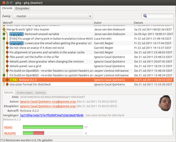

Grafische Oberflächen für Git
Zum Verständnis dieses Artikels sind folgende Seiten hilfreich:
Das dezentrale Versionsverwaltungssystem Git wird standardmäßig über die Kommandozeile bedient. Es gibt aber auch eine Reihe von grafischen Oberflächen, welche im folgenden aufgeführt sind.
Grafische Oberflächen¶
gitk¶
gitk  ist eine einfache Tk-Oberfläche für Git. Sie ist ein offizieller Bestandteil des Git-Projektes und kann einfach installiert[1] werden:
ist eine einfache Tk-Oberfläche für Git. Sie ist ein offizieller Bestandteil des Git-Projektes und kann einfach installiert[1] werden:
gitk
 mit apturl
mit apturl
Paketliste zum Kopieren:
sudo apt-get install gitk
sudo aptitude install gitk
Zum Start verwendet man den Befehl:
gitk
Der aktive Branch wird angezeigt. Alle Branches zeigt der Befehl:
gitk --all
Das Programm git-gui wird zusätzlich benötigt, wenn z.B. git blame Funktionalität innerhalb von gitk genutzt wird.
git-gui¶
git-gui ist die Standardoberfläche für Git. Sie ist ebenfalls offizieller Bestandteil des Git-Projekts und kann über das folgende Paket installiert[1] werden:
git-gui (universe)
mit apturl
Paketliste zum Kopieren:
sudo apt-get install git-gui
sudo aptitude install git-gui
Zum Start verwendet man diesen Befehl:
git gui
Mit ihr lassen sich die alltäglichen Aufgaben komfortabel erledigen.
QGit¶
QGit (QGit viewer) ist eine Qt-basierte Oberfläche für Git, die nicht vom Git-Projekt, sondern extern entwickelt wird. Installiert wird sie über das folgende Paket:
qgit (universe)
mit apturl
Paketliste zum Kopieren:
sudo apt-get install qgit
sudo aptitude install qgit
Auch mit dieser Oberfläche kann man bequem arbeiten.

- Erstellt mit Inyoka
-
 2004 – 2017 ubuntuusers.de • Einige Rechte vorbehalten
2004 – 2017 ubuntuusers.de • Einige Rechte vorbehalten
Lizenz • Kontakt • Datenschutz • Impressum • Serverstatus -
Serverhousing gespendet von